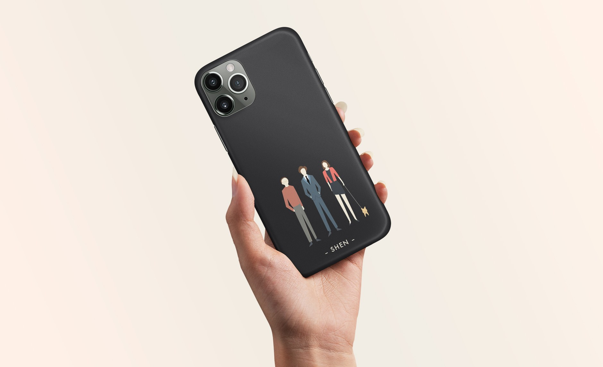

Graphic Design Collection
Graphic Design, Illustration Poster Series

The Task
A Selection of my past graphic design / illustration work
Skills
Illustration
Color
Typography
Infographics
Isometric Cityscape
An isometric drawing practice.

The Great Gatsby Book Mock Cover

SHEN Family Phone Case
Illustrations for the Daily Bruin
A Blender model illustration about the concept of parking lot ‘Poasis’ - See the original news article here
The Fly House
At a glance, this piece is merely a 3D modeled fly. However, taking a closer look, the belly of the fly is designed to be the interior of a house. I aimed to take something that is usually unpleasant to most people and offer a new perspective on it.

Three Homes

Nightmare
Color Mood: Cheerful
Veggie Posters

Registration Flyer for the 29th UCLA Lake Arrowhead Symposium

An Overview of Finland
A collection of information graphics about Finland's geography, demographics and economy.